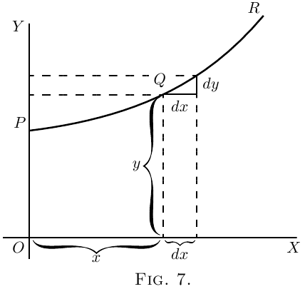
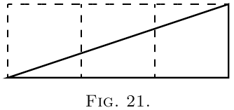

设 图 7 中的 $PQR$ 是一条曲线的一段，这条曲线是相对于坐标轴 $OX$ 和 $OY$ 画出的。取曲线上的任意一点 $Q$，它的横坐标是 $x$， 纵坐标是 $y$。现在观察当 $x$ 变化时 $y$ 怎样变化。如果让 $x$ 向右增加一个小增量 $dx$，就会看到 $y$ 也在这条特定曲线上增加一个小增量 $dy$（因为这条曲线恰好是一条上升曲线）。于是，$dy$ 与 $dx$ 的比值就是曲线在 $Q$ 与 $T$ 两点之间向上倾斜程度的量度。事实上，从图上可以看出， $Q$ 与 $T$ 之间的曲线有许多不同的斜率，所以我们很难笼统地说曲线在 $Q$ 与 $T$ 之间的斜率。不过，如果 $Q$ 和 $T$ 足够接近，以至于曲线的小段 $QT$ 实际上可以看成直线，那么就可以说比值 $\dfrac{dy}{dx}$ 是曲线沿 $QT$ 的斜率。把直线 $QT$ 向两边延长，它只沿着 $QT$ 这一段接触曲线；如果这一段无限小， 这条直线实际上就只在一个点接触曲线，因此就是曲线的切线。
这条曲线的切线显然与 $QT$ 有相同的斜率，所以 $\dfrac{dy}{dx}$ 就是在求出该值的点 $Q$ 处，曲线切线的斜率。
我们已经看到，“曲线的斜率”这个简短说法并没有精确意义，因为一条曲线有许多斜率； 事实上，曲线的每一小段都有不同的斜率。不过，“曲线在一点处的斜率”却是完全确定的： 它就是正位于那一点附近的一小段曲线的斜率；而我们已经看到，这和“曲线在那一点处的切线斜率”是同一回事。
注意，$dx$ 是向右迈出的一小步，$dy$ 是相应向上的一小步。这些步长必须看作尽可能短， 实际上是无限短；不过在图中我们必须把它们画成并非无穷小的一小段，否则就看不见了。
以后我们会大量用到这一事实：$\dfrac{dy}{dx}$ 表示曲线在任意一点处的斜率。
如果一条曲线在某一点以 $45°$ 向上倾斜，如 图 8 所示，
$dy$ 和 $dx$ 就相等，$\dfrac{dy}{dx} = 1$。
如果曲线向上倾斜得比 $45°$ 更陡（图 9），
$\dfrac{dy}{dx}$ 就大于 $1$。
如果曲线向上倾斜得很缓，如 图 10，
$\dfrac{dy}{dx}$ 就是一个小于 $1$ 的分数。
对于水平直线，或曲线中的水平位置，$dy=0$，因此 $\dfrac{dy}{dx}=0$。
如果曲线向下倾斜，如 图 11，$dy$ 就是向下的一步，
因此必须算作负值；于是 $\dfrac{dy}{dx}$ 也带负号。
如果这条“曲线”碰巧是一条直线，比如 图 12 中那样，
$\dfrac{dy}{dx}$ 的值在它的所有点上都相同。换句话说，它的斜率是常数。
如果一条曲线越向右走越向上弯，随着陡峭程度增加，$\dfrac{dy}{dx}$ 的值也会越来越大，
如 图 13 所示。
如果一条曲线越走越平，那么到达较平的部分时，$\dfrac{dy}{dx}$
的值就会越来越小，如 图 14 所示。
如果一条曲线先下降，然后又上升，如 图 15 所示，呈现向上的凹形，
那么显然 $\dfrac{dy}{dx}$ 起初为负；随着曲线变平，它的绝对值逐渐减小，并在曲线谷底时变为零；
从这一点以后，$\dfrac{dy}{dx}$ 又取得正值，并且继续增大。在这种情形下，我们说 $y$
经过一个极小值。$y$ 的极小值不一定是 $y$ 的最小值；它只是与谷底对应的那个 $y$ 值。
例如，在 图 28 中，与谷底对应的 $y$ 值是 $1$，
而 $y$ 在别处还会取到比这更小的值。极小值的特征是：在它的两侧，$y$ 都必须增加。
注意——对于使 $y$ 取极小值的那个特定 $x$ 值，有 $\dfrac{dy}{dx} = 0$。
如果一条曲线先上升再下降，那么 $\dfrac{dy}{dx}$ 的值起初为正；到达峰顶时为零；
随着曲线向下倾斜又变为负，如 图 16 所示。在这种情形下，我们说 $y$
经过一个极大值，但 $y$ 的极大值不一定是 $y$ 的最大值。在 图 28 中，
$y$ 的极大值是 $2\frac{1}{3}$，但这绝不是 $y$ 在曲线其他点上所能取得的最大值。
注意——对于使 $y$ 取极大值的那个特定 $x$ 值，有 $\dfrac{dy}{dx}= 0$。
如果曲线具有 图 17 那样的奇特形状，$\dfrac{dy}{dx}$
的值将始终为正；但会有一个特别的位置，曲线的斜率最不陡，此处 $\dfrac{dy}{dx}$
的值为极小值；也就是说，它比曲线上任何其他部分的值都小。
如果曲线具有 图 18 的形状，$\dfrac{dy}{dx}$
在上半部分为负，在下半部分为正；而在曲线的尖端处，它实际上变成垂直，
此时 $\dfrac{dy}{dx}$ 的值将无限大。
既然我们已经明白 $\dfrac{dy}{dx}$ 衡量曲线在任意一点处的陡峭程度，
就来看看一些我们已经学会求导的方程。
(1) 先看最简单的情形：
\[
y=x+b.
\]
它按 $x$ 和 $y$ 的相同标度画在 图 19 中。如果令 $x = 0$，
对应的纵坐标就是 $y = b$；也就是说，这条“曲线”在高度 $b$ 处穿过 $y$ 轴。
从这里开始，它以 $45°$ 向上升；无论我们把 $x$ 向右取多大，$y$ 都同样向上增加。
这条直线的斜率是 $1$ 比 $1$。
现在按我们已经学过的规则（见这里和这里）对 $y = x+b$ 求导，
得到 $\dfrac{dy}{dx} = 1$。
这条直线的斜率意思是：每向右走一小步 $dx$，就向上走同样一小步 $dy$。
并且这个斜率是常数——永远是同一个斜率。
(2) 再看另一个情形：
\[
y = ax+b.
\]
我们知道，这条曲线像前一条一样，会从 $y$ 轴上的高度 $b$ 处开始。不过在画曲线之前，
先通过求导来求它的斜率；得到 $\dfrac{dy}{dx} = a$。斜率将是常数，
对应某个角度，而这个角度的正切在这里叫做 $a$。给 $a$ 指定一个数值，比如 $\frac{1}{3}$。
那么就必须让它具有这样的斜率：每横向走 $3$，向上升 $1$；或者说 $dx$ 是 $dy$ 的
$3$ 倍；如 图 21 放大所示。因此，在 图 20 中按这个斜率画出直线。

(3) 现在来看一个稍难一点的情形。
\begin{align*}
\text{令}\;
y= ax^2 + b.
\end{align*}
同样，这条曲线会从 $y$ 轴上高于原点 $b$ 的地方开始。
现在求导。[如果你忘了，可以翻回这里；或者，更好的是，别翻回去，
自己把求导想出来。]
\[
\frac{dy}{dx} = 2ax.
\]
这表明陡峭程度不是常数：它会随着 $x$ 的增加而增加。在起点 $P$，
也就是 $x = 0$ 的地方，曲线（图 22）没有陡峭程度——也就是说，它是水平的。
在原点左侧，$x$ 取负值的地方，$\dfrac{dy}{dx}$ 也取负值，也就是从左向右下降，如图所示。
我们用一个具体例子来说明。取方程
\[
y = \tfrac{1}{4}x^2 + 3,
\]
对它求导，得到
\[
\dfrac{dy}{dx} = \tfrac{1}{2}x.
\]
现在给 $x$ 指定几个连续的值，比如从 $0$ 到 $5$；用第一个方程算出对应的 $y$ 值，
再用第二个方程算出对应的 $\dfrac{dy}{dx}$。把结果列成表：